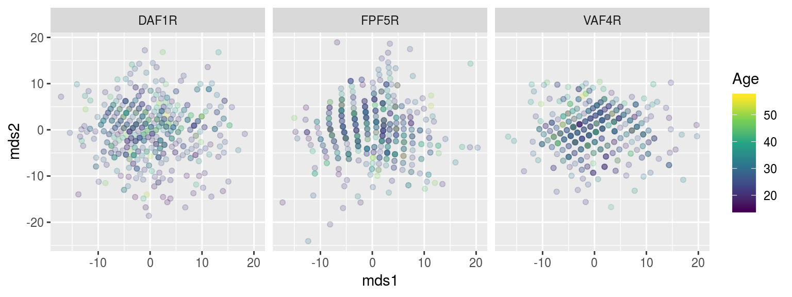
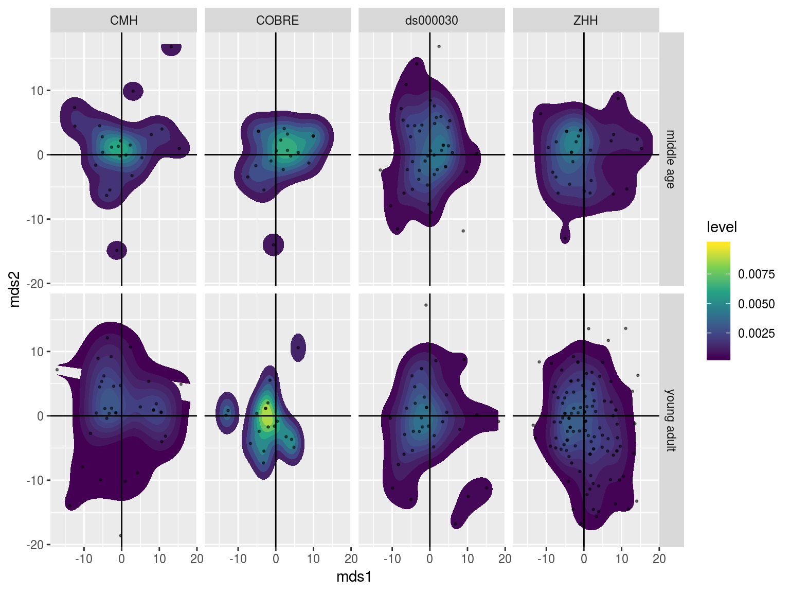

Chapter 5 Multi-Dimensional Scaling Stats on PINT ROI locations
library(tidyverse)## ── Attaching packages ──────────────────────────────────────────────────────────────────────────────────────────────────────────────────── tidyverse 1.2.1 ──## ✔ ggplot2 3.1.0 ✔ purrr 0.2.5
## ✔ tibble 2.0.1 ✔ dplyr 0.8.0.1
## ✔ tidyr 0.8.2 ✔ stringr 1.3.1
## ✔ readr 1.3.0 ✔ forcats 0.3.0## ── Conflicts ─────────────────────────────────────────────────────────────────────────────────────────────────────────────────────── tidyverse_conflicts() ──
## ✖ dplyr::filter() masks stats::filter()
## ✖ dplyr::lag() masks stats::lag()library(broom)
library(igraph)##
## Attaching package: 'igraph'## The following objects are masked from 'package:dplyr':
##
## as_data_frame, groups, union## The following objects are masked from 'package:purrr':
##
## compose, simplify## The following object is masked from 'package:tidyr':
##
## crossing## The following object is masked from 'package:tibble':
##
## as_data_frame## The following objects are masked from 'package:stats':
##
## decompose, spectrum## The following object is masked from 'package:base':
##
## unionlibrary(here)## here() starts at /mnt/tigrlab/projects/edickie/code/SZ_PINTsource(here('code/R/settings_helpers.R'))
Yeo7_2011_80verts <- read_Yeo72011_template()
YeoNet_colours = define_Yeo7_colours()
pheno <- read_pheno_file() %>% drop_na(DX)## Parsed with column specification:
## cols(
## .default = col_double(),
## dataset = col_character(),
## subject_id = col_character(),
## session_id = col_character(),
## task_id = col_character(),
## run_id = col_character(),
## acq_id = col_character(),
## subject = col_character(),
## session = col_character(),
## cmh_session_id = col_character(),
## DX = col_character(),
## Sex = col_character(),
## Site = col_character(),
## Scanner = col_character(),
## isFEP = col_character(),
## ghost_NoGhost = col_character(),
## filename = col_character()
## )## See spec(...) for full column specifications.subsub <- read_csv(file.path(output_base,'postPINT2_sub2sub_all_qa_passes.csv'))## Parsed with column specification:
## cols(
## subid1 = col_character(),
## subid2 = col_character(),
## roiidx = col_double(),
## distance = col_double()
## )mds_sub2sub <- function(data) {
## filter allsub2sub distances to only include the qced subids
## then run multidimensional scaling to resolve the sub2sub distances to a 2D plane
distout <- data %>%
graph_from_data_frame() %>%
get.adjacency(attr = "distance") %>%
as.matrix() %>%
cmdscale(k=2) %>%
as.data.frame()
names(distout) <- c('mds1','mds2')
distout$src_file <- row.names(distout)
distout <- as.tibble(distout) %>%
select(src_file, mds1, mds2)
return(as.tibble(distout))
}subsub %>%
filter(roiidx == 1) %>%
select(subid1, subid2, distance) %>%
mds_sub2sub()## Warning: `as.tibble()` is deprecated, use `as_tibble()` (but mind the new semantics).
## This warning is displayed once per session.## # A tibble: 494 x 3
## src_file mds1 mds2
## <chr> <dbl> <dbl>
## 1 sub-10159_task-rest_bold_desc-clean_bold -8.90 6.21
## 2 sub-10161_ses-03_task-rest_bold_desc-clean_bold -12.4 -6.73
## 3 sub-10185_ses-03_task-rest_bold_desc-clean_bold -16.8 2.83
## 4 sub-10186_ses-02_task-rest_bold_desc-clean_bold 2.30 -6.17
## 5 sub-10206_task-rest_bold_desc-clean_bold 6.98 -6.90
## 6 sub-10217_task-rest_bold_desc-clean_bold 0.334 5.22
## 7 sub-10225_task-rest_bold_desc-clean_bold -5.33 -2.67
## 8 sub-10227_task-rest_bold_desc-clean_bold -1.44 7.06
## 9 sub-10228_task-rest_bold_desc-clean_bold -2.86 -3.21
## 10 sub-10235_task-rest_bold_desc-clean_bold 3.24 1.98
## # … with 484 more rowsmds_results <- subsub %>%
group_by(roiidx) %>%
nest() %>%
mutate(sdist = map(data, ~mds_sub2sub(.x))) %>%
select(roiidx, sdist) %>%
unnest()mds_pheno <- pheno %>%
mutate(src_file = str_replace(filename, '_summary.csv','')) %>%
inner_join(mds_results, by = "src_file") %>%
inner_join(Yeo7_2011_80verts, by = "roiidx") sdist_manova <- mds_pheno %>%
group_by(SHORTNAME) %>%
do(tidy(manova(cbind(mds1, mds2) ~ DX*Age_pt + Sex + fd_mean_pt + Scanner + SurfArea_pt,.))) %>%
ungroup() %>%
group_by(term) %>%
mutate(p_FDR = p.adjust(p.value, method = "fdr"))sdist_manova %>% filter(p_FDR < 0.1) %>% knitr::kable()| SHORTNAME | term | df | pillai | statistic | num.df | den.df | p.value | p_FDR |
|---|---|---|---|---|---|---|---|---|
| DAF1R | Age_pt | 1 | 0.0333245 | 8.308063 | 2 | 482 | 0.0002836 | 0.0226852 |
| DAF2R | Scanner | 4 | 0.0521536 | 3.233081 | 8 | 966 | 0.0012275 | 0.0245509 |
| DAP3L | SurfArea_pt | 1 | 0.0373781 | 9.357897 | 2 | 482 | 0.0001030 | 0.0082400 |
| DAT1R | Scanner | 4 | 0.0419300 | 2.585731 | 8 | 966 | 0.0085038 | 0.0606834 |
| DMF2L | Scanner | 4 | 0.0500795 | 3.101205 | 8 | 966 | 0.0018362 | 0.0270478 |
| DMP1L | Scanner | 4 | 0.0444748 | 2.746233 | 8 | 966 | 0.0053180 | 0.0425443 |
| DMT1L | Scanner | 4 | 0.0488459 | 3.022896 | 8 | 966 | 0.0023280 | 0.0270478 |
| DMT2R | Scanner | 4 | 0.0487598 | 3.017440 | 8 | 966 | 0.0023667 | 0.0270478 |
| FPF4L | SurfArea_pt | 1 | 0.0240749 | 5.945181 | 2 | 482 | 0.0028143 | 0.0750485 |
| FPF5R | Age_pt | 1 | 0.0277014 | 6.866231 | 2 | 482 | 0.0011474 | 0.0458968 |
| FPF5R | Scanner | 4 | 0.0920534 | 5.825870 | 8 | 966 | 0.0000003 | 0.0000221 |
| FPP1L | Scanner | 4 | 0.0380182 | 2.339828 | 8 | 966 | 0.0171699 | 0.0879449 |
| FPP2R | Scanner | 4 | 0.0412005 | 2.539798 | 8 | 966 | 0.0097119 | 0.0606834 |
| SMF2R | fd_mean_pt | 1 | 0.0302949 | 7.529166 | 2 | 482 | 0.0006028 | 0.0482228 |
| SMI1L | Scanner | 4 | 0.0371739 | 2.286882 | 8 | 966 | 0.0199159 | 0.0937220 |
| VAF2R | Scanner | 4 | 0.0458917 | 2.835783 | 8 | 966 | 0.0040793 | 0.0407933 |
| VAF4R | Age_pt | 1 | 0.0231541 | 5.712415 | 2 | 482 | 0.0035324 | 0.0941985 |
| VAI1R | Scanner | 4 | 0.0831686 | 5.239172 | 8 | 966 | 0.0000019 | 0.0000780 |
| VAP1L | Scanner | 4 | 0.0378815 | 2.331250 | 8 | 966 | 0.0175890 | 0.0879449 |
| VAP2L | Scanner | 4 | 0.0397492 | 2.448523 | 8 | 966 | 0.0126192 | 0.0721098 |
| VI01R | SurfArea_pt | 1 | 0.0241456 | 5.963079 | 2 | 482 | 0.0027656 | 0.0750485 |
| VI02L | Scanner | 4 | 0.0558513 | 3.468893 | 8 | 966 | 0.0005922 | 0.0157924 |
| VI03L | Scanner | 4 | 0.0411165 | 2.534513 | 8 | 966 | 0.0098611 | 0.0606834 |
| VI05R | Scanner | 4 | 0.0445311 | 2.749793 | 8 | 966 | 0.0052625 | 0.0425443 |
mds_pheno %>%
filter(SHORTNAME %in% c("DAF1R", "FPF5R", "VAF4R")) %>%
ggplot(aes(x = mds1, y = mds2, color = DX)) +
geom_point(alpha = 0.1) +
scale_color_manual(values = c("grey20","red")) +
facet_wrap(~SHORTNAME, ncol = 5)
mds_pheno %>%
filter(SHORTNAME %in% c("DAF1R", "FPF5R", "VAF4R")) %>%
ggplot(aes(x = mds1, y = mds2, color = Age)) +
geom_point(alpha = 0.2) +
scale_color_viridis_c() +
facet_wrap(~SHORTNAME, ncol = 5)
mds_pheno %>%
mutate(Age_coarse = case_when(Age < 25 ~ "young adult",
Age > 35 ~ "middle age")) %>%
drop_na(Age_coarse) %>%
filter(SHORTNAME %in% c("DAF1R")) %>%
ggplot(aes(x = mds1, y = mds2)) +
stat_density_2d(aes(fill = stat(level)), bins = 8, geom = "polygon") +
geom_point(alpha = 0.5, size = 0.5) +
scale_fill_viridis_c() +
geom_hline(yintercept = 0) + geom_vline(xintercept = 0) +
facet_grid(Age_coarse ~ Site)